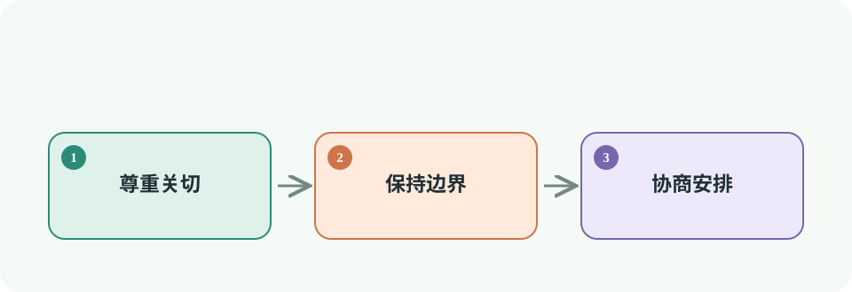
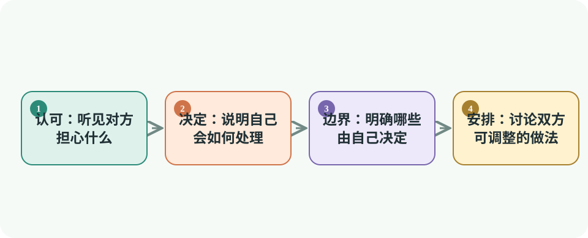

与父母沟通：尊重关切，也保留自主边界
把关心与控制分开，把不可协商的决定和可协商的安排说清楚
01 · 从一个具体问题开始
长辈的提醒可能出于关心，也可能让成年人感到自己的决定不断被质疑。若一开口就反击“别管我”，容易让对话变成谁更有资格决定。
先准确回应关切，再简洁说明自己的判断与决定，最后只协商双方都能调整的联系、通知或照护安排。
02 · 把方法拆成可观察的动作
在亲密关系、代际关系与亲子教育中，兼顾情绪理解、个人边界和可执行安排。 这些动作是教学工具，不是必须逐字套用的公式。

尊重关切
准确复述长辈担心（安全、稳定、孤独、经验）并表达感谢。
保持边界
简短陈述自己的事实、决定及不可妥协的边界，不无限解释。
协商安排
提出可协商的联系频率、通知方式或照护分工。
03 · 多轮案例：回应怎样随着信息推进
日常穿衣案例适合练习轻量边界；医疗、财产、照护和重大决定需要更充分的信息与支持。
父母催你穿秋裤
天气转凉，父母反复提醒你穿厚一些；你已经根据气温准备好外套。
沟通目标：表示感谢并自己决定衣着。
你怎么又穿那么少？
我知道您是怕我着凉，谢谢提醒。今天我看过气温，也带了外套，冷了会穿。
冷了感冒怎么办？
感冒确实不好受，我会留意身体状况。衣服怎么穿我会自己判断；如果天气变冷，我可以随时加衣服。
示范回应用于观察结构，不是唯一正确答案。真实沟通应根据事实、关系和风险调整。

04 · 交互拆解：逐步检查每个动作
选择一个动作，观察它解决的具体问题。所有步骤默认都在页面中可读；按钮只是帮助你聚焦其中一层。
怎样把沟通原则变成下一句话
尊重关切
准确复述长辈担心（安全、稳定、孤独、经验）并表达感谢。
检查点：这一轮是否回应了对方刚刚提出的具体问题？
保持边界
简短陈述自己的事实、决定及不可妥协的边界，不无限解释。
检查点：这一轮是否回应了对方刚刚提出的具体问题？
协商安排
提出可协商的联系频率、通知方式或照护分工。
检查点：这一轮是否回应了对方刚刚提出的具体问题？
当前聚焦第 1 步。
05 · 常见失误与适用边界
- 把长辈的动机直接判断成控制或不尊重。
- 用无限解释换取对方批准。
- 在威胁、财产控制或人身安全风险下继续单独争辩。
任何沟通框架都不能替代事实核查、正式流程、法律意见或现实安全判断。遇到不确定信息，应明确说出未知并约定核验方式。
06 · 把文章变成一次练习
从一个小而低风险的决定开始，练习一句感谢、一句事实、一句自主决定和一个可协商安排。
父母催你穿秋裤
在训练页打开这道案例，先隐藏参考、逐轮作答，再做四维自评。
07 · 来源与说明
本文区分外部框架、项目教学改编和案例示范。引用只支持来源中明确涉及的概念，不代表本文所有表达步骤均经过实验验证。
- National Institute on Aging · Advance Care Planning · https://www.nia.nih.gov/health/advance-care-planning（Planning conversations about preferences and care）
本文的案例、步骤顺序、互动拆解和四维自评属于言习课程设计。项目自评用于个人纵向复盘，不是经心理测量验证的量表，也不是任何机构的认证课程。